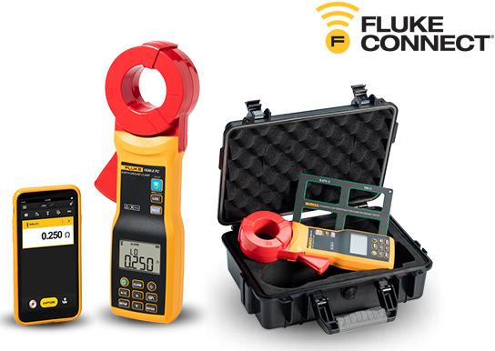

Pinza per misure di terra senza picchetti Fluke 1630-2 FC
Per test di dispersione e messa a terra rapidi e sicuri, all'interno e all'aperto

I test di messa a terra sono fondamentali per la sicurezza personale e per impedire danni alle apparecchiature dovuti a fulmini e altre situazioni di sovratensione.
Scarica subito la nota applicativa »

Mantieni le tue apparecchiature attive. È possibile identificare la resistenza dell'impianto di massa senza scollegare l'elettrodo di terra dal sistema con la pinza Fluke 1630-2 FC.
© Fluke Corporation. Tutti i marchi sono di proprietà dei rispettivi titolari. Per condividere i dati è necessaria una connessione Wi-Fi o rete cellulare. Smartphone, servizio wireless e piano dati non sono compresi nel prezzo di acquisto. I primi 5 GB di memoria sono gratuiti. I dettagli sul supporto telefonico sono disponibili alla pagina fluke.com/phones